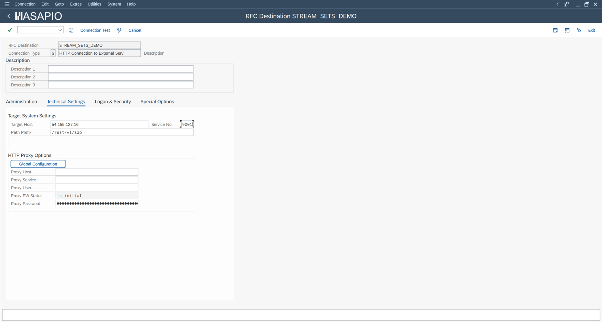
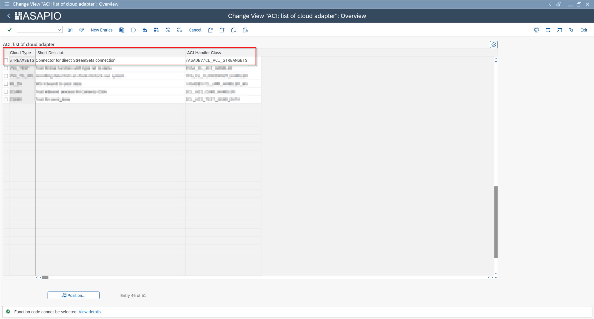
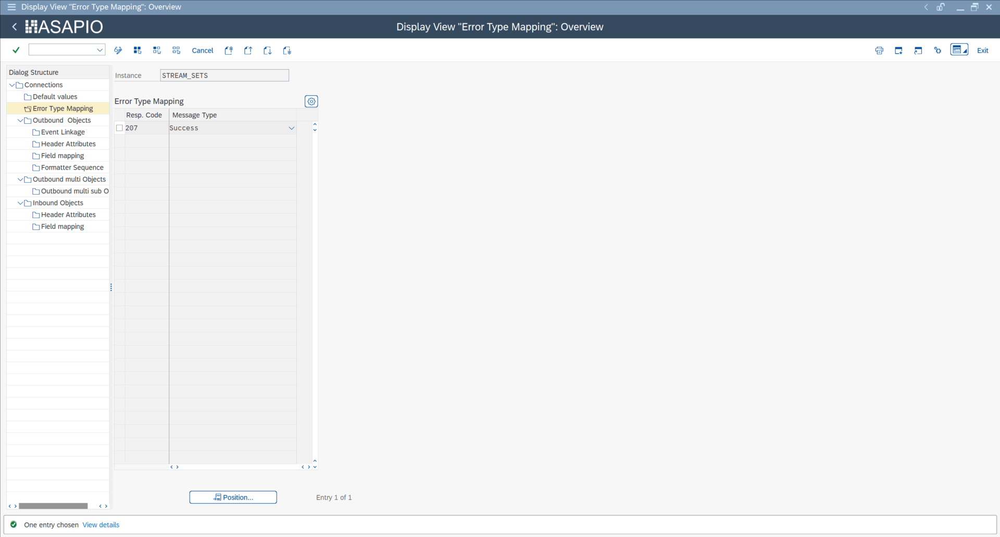

Connectors
StreamSets® Connector
Overview
ASAPIO can send SAP event payloads directly to a StreamSets® Data Collector HTTP endpoint. StreamSets then processes the data through configured pipelines, enabling integration with virtually any downstream system.
Setup
1. Create RFC Destination
Create an HTTP connection (Type G) in transaction SM59 pointing to your StreamSets Data Collector REST endpoint (host and port of the StreamSets instance).

2. Create Cloud Instance
In /ASADEV/ACI_SETTINGS, create a new connection instance with the following values:

| Field | Value |
|---|---|
| Cloud Type | STREAMSETS |
| Cloud Adapter | /ASADEV/CL_ACI_STREAMSETS |
| RFC Destination | Your SM59 RFC destination |
| ISO Code (Charset) | UTF-8 |
3. Error Mapping
StreamSets returns HTTP 207 for a successfully received batch. Configure the connection instance to treat HTTP 207 as a success response.

4. Outbound Object
Configure the outbound object using the standard ASAPIO outbound setup. Any event trigger, extractor function module, and payload design compatible with the generic REST adapter can be used with the StreamSets connector.